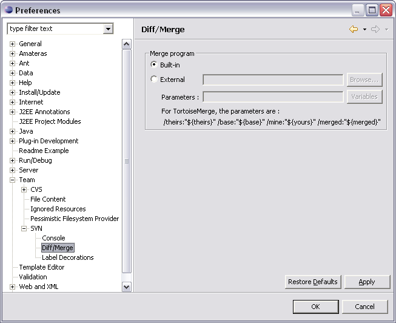
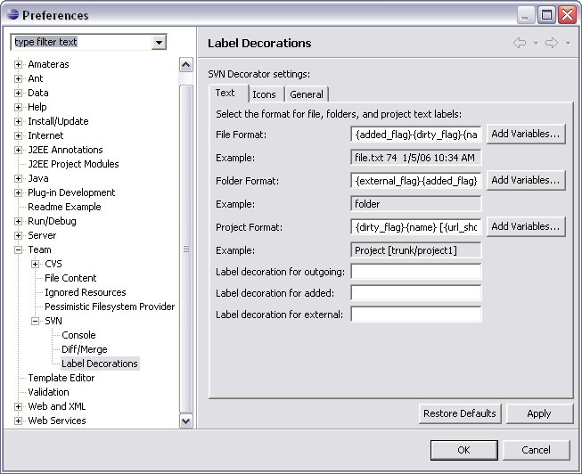

Preferences
The preferences dialog is accessed via the menu
option. The SVN options are located under the Team node in the navigation
tree.
SVN

General SVN Settings
- Show revision comparisons in a dialog
-
This setting launches the revision comparison in a dialog.
- Select unversioned resources on commit
-
Check this setting to have SVN automatically
select all unversioned resources in your working
copy when performing a commit operation.
- Fetch affected paths on demand
-
This setting affects the History view. Checking this option tells SVN
to only get the list of changed items for a revision when you
click on it. This may make the initial list retrieval a little
faster and also uses less memory, particularly if you have some revisions
with thousands of changed items
.
- Show tags in remote history view
-
Checking this option will cause SVN to show
tag information when browsing history directly from the repository.
On a slow connection you probably would not want to do this.
- Default number of log messages
-
Specify the number of log messages to retrieve from the repository when viewing
log history. An entry of zero (0) will tell SVN to retrieve all of the
available log messages.
SVN Interface
This setting controls whether SVN should utilise the JavaHL (JNI) or SVNKit
(Pure Java) interface when communicating with the SVN repository.
Configuration location
This setting specifies where the SVN configuration file is located.
Select either the default location or
an alternative location by pressing the Browse button.
Console

The SVN plug-in for Eclipse can display the SVN commands, messages and error
information in the Eclipse Console. This
screen allows you to control the colors that are used in the Console for
SVN output.
- Console text color settings
-
Colors can be chosen for three distinct Console outputs. These are command
line, messages and error
notifications. To change a color, click on the colored button next to
the desired console output
type and select a new color.
- Show SVN output in the Console View
-
Check this box if want to have SVN messages sent to the Eclipse
console.
- Bring SVN output to front on error
-
Checking this option will force the Console tab to the front when SVN
writes an error
message to the Console.
Diff/Merge

This setting allows you to specify whether you want to use the merge program
supplied with the Eclipse platform or an external merge program.
For external
merge programs, you can pass a number of special parameters:
- base
-
the original file without your changes
- theirs
-
the file as it is in the repository
- yours
-
the file as it is in the repository
- merged
-
the conflicted file, where to merge
Label Decorations

Text
These settings control how the SVN plug-in for Eclipse will decorate files,
folders and project text labels. A complete
list of available substitution variables and their meaning can be obtained
by clicking Add Variables. An
example of how the decorated item will be shown is displayed beneath the
configured item.
- File Format
-
Specify the variables you would like SVN to use when decorating
files listed in your
project directories.
- Folder Format
-
Specify the variables you would like SVN to use when decorating project
folders.
- Project Format
-
Specify the variables you would like SVN to use when decorating
your project.
Additional text labels can be specified for outgoing, added and external
files in your projects too.
Icons

These settings allow you to configure certain icon decorators within the
SVN plug-in for Eclipse.
- Indicate is outgoing
-
A locally modified, versioned file.
- Indicate has remote
-
A local, versioned file that is not modified.
- Indicate is added
-
A file has been marked for addition but has not yet been committed.
- Indicate is new resource
-
An unversioned file.
General

Check this setting to have the SVN plug-in for Eclipse drill down through
your project directory structures to determine
the decorator to use at the folder level.
 Uncheck this setting if you experience poor decorator performance in Eclipse.
Uncheck this setting if you experience poor decorator performance in Eclipse.
Related Tasks
None
Related Reference
Configuring branches and tags